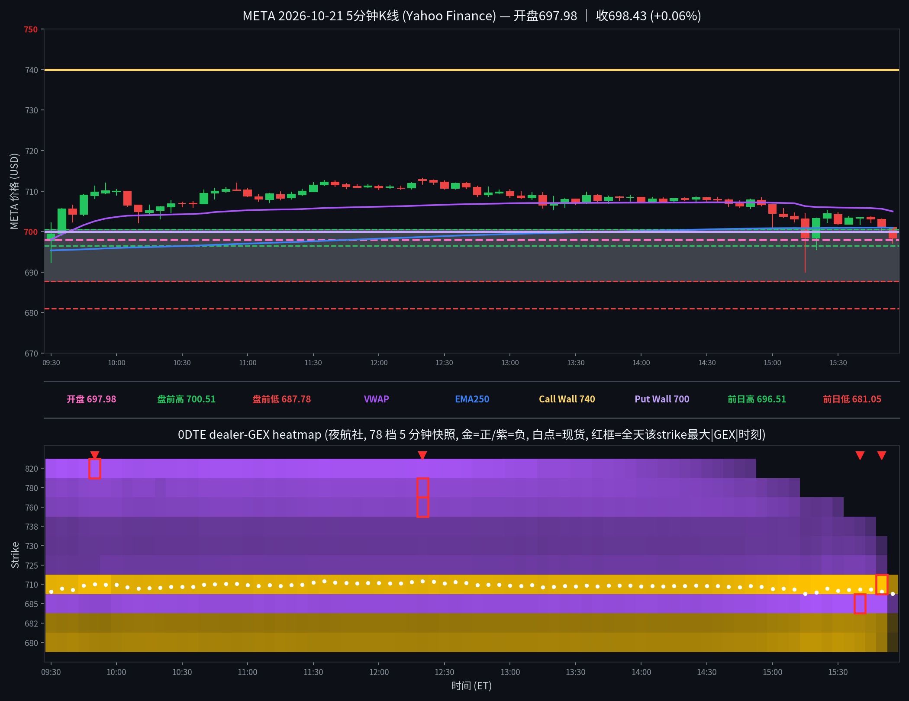

META 日内报告
2026年10月21日 · 周三 · 日内报告
早盘分析
2026-10-21 07:25 MDT｜Alpha夜航社 #junkman-analysis｜作者 junk_man（APP徽章）
盘前参考价691.745，🟡正负混合、方向选择。Call Wall 740（参考价下方）/ Magnet 677.5（参考价上方）/ Put Wall 700（参考价上方；⚠️在参考价上方，不作下方支撑）/ Flip 679.1（参考价上方）；交易区间690–695，上墙延伸740–745。潜在低点观察区687.5–690（非最低价预测）：失守687.5取消本轮接底，等收复690回踩。开盘分支：690下方反抽不过先看687.5；692.5上方回踩守住先看695；之间等确认。五个机会：①📈回踩Call：收复692.5、回踩守住→695→697.5；失守692.5取消。②🚀突破Call：站稳740→742.5→745（745再站稳→747.5→750）；跌破回踩低点退出。③📉受阻Put：692.5受阻再失守690→687.5→685；站稳692.5取消。④🔻破位Put：跌破690、反抽不过→687.5→685；收回690取消。⑤🛟抄底Call：下探687.5–690后收复690、回踩守住→692.5→695；再破回踩低点退出。 「💵 盘前参考价 691.745 ｜ 🟡 正负混合｜方向选择 🔴 740 CALL WALL 下方｜🟣 677.5 MAGNET 上方 🟢 700 PUT WALL 下方｜ 🔵 679.1 FLIP 上方」
盘前预测 · 情况未发生
5 分钟 K 线 × 0DTE heatmap
0DTE（2026-10-21到期），夜航社 78 档 5 分钟快照；白点为每档现货位置

heatmap解读（0DTE（2026-10-21到期），夜航社 78 档 5 分钟快照）
GEX 地形图（0DTE（2026-10-21到期），夜航社 78 档 5 分钟快照）：金色=正 gamma 区（做市商对冲减速带/墙），紫色=负 gamma 区（加速带）。白点为每档现货位置。注：15:55 末帧全 strike gamma 集体衰减（710 +1.14M→+0.17M），为 0DTE 到期日尾盘报价现象，收盘结构解读以 15:50 帧为准。
- 金色带（15:50帧）：710(+1.14M，全天最强正节点/磁铁，午后持续增厚的天花板)
- 紫色带（15:50帧）：685(-0.56M，下方负gamma加速带，全天未被触及)/820(-0.6M@09:50，午后衰减消失)
- 全天最大节点：710(+1.14M@15:50)、685(-0.6M@15:40)、820(-0.6M@09:50)、780(-0.4M@12:20)、760(-0.3M@12:20)
- 结构特点：0DTE量级小（最大|GEX|仅1.1M）、全天基本不动；价格上午站上710冲高713.22，午后710增厚压回、价格跌回其下方收698.43
全天最大节点 TOP5
一、710（上方正 gamma 天花板/磁铁）：全天变化——09:30 +0.41M → 午盘维持 0.4M → 15:00 起持续增厚（15:30 +0.70M → 15:50 +1.14M 峰值）→ 15:55 崩塌至 +0.17M（0DTE 尾盘报价衰减，结构解读以 15:50 帧为准）；影响时段——09:55 现货首根 5m 收上 710（710.1），12:40 前现货在 710 上方运行约 3 小时；影响方式——上午 710 是脚下支撑（站上后冲高 713.22@12:20），午后增厚为天花板（14:00 后现货再未收回 710 上方，价格被压回 700 一带）。
二、685（下方负 gamma 加速带）：全天变化——09:30 -0.39M → 午盘 -0.4M → 午后加深（15:40 -0.6M 峰值）→ 15:55 衰减至 -0.09M；影响时段——15:15 现货急跌影线打到 690.0（距 685 仅 5 点），但该根 5m 收盘 698.48 V 型收回；影响方式——全天未被真正触及，仅作下方加速带背景；若 15:15 那根收在 690 下方，685 将是第一段加速带。
三、820（远端上方负 gamma）：全天变化——09:30 -0.45M → 09:50 -0.6M 峰值 → 午后衰减（14:00 后帧内无该 strike）；影响时段——09:50 达到峰值，当时现货约 709.7；影响方式——远离现货（>110 点），全天无影响，仅作远端加速带背景。
四、780（远端上方负 gamma）：全天变化——09:30 -0.3M → 12:20 -0.4M 峰值 → 维持；影响时段——12:20 达到峰值，当时现货约 713.0（当天最高点 713.22 附近）；影响方式——距现货 67 点，全天无直接影响；若价格向上突破 710 并延续，780 为上方第一段加速带。
五、760（远端上方负 gamma）：全天变化——09:30 -0.2M → 12:20 -0.3M 峰值；影响时段——12:20 达到峰值，当时现货约 713.0；影响方式——距现货 47 点，全天无直接影响，背景加速带。
亮度口径：p99 截断做上限；红框 = 全天该 strike 最大 |GEX| 时刻。
资金流（0DTE，全天0笔；premium≥$20万｜size≥50｜DTE≤1｜side=B/M/A）
（当日无符合筛子的 flow 记录，或数据未拉取到）
全天105笔原始大单经DTE≤1过滤后为0笔（0DTE到期日竟无一笔≥$20万主动大单；最近到期为10/23周度34笔、11/20月度20笔）——今日无近端主动大单；mid $0.75M（不计入主动买卖）。全口径105笔：偏多49笔$26.89M / 偏空54笔$33.99M，略偏空；其中10/23到期34笔：偏多19笔$6.34M / 偏空15笔$5.15M，略偏多（押财报后方向）。注：财报日（盘后Q3）大单押远端，近端gamma极薄。
分析总结
价格行为 × 0DTE GEX 结构复盘
① 开盘 697.98，全天 713.22–690.0，收 698.43（+0.06%，收开差+0.45）。
② 白点轨迹：开 697.98 → 09:55 首根 5m 收上 710（710.1）→ 12:20 高 713.22 → 午后 13:00–15:00 在 706–709 窄磨 → 15:15 一根急跌影线 690.0（恰为 junkman 交易区间下沿）V 型收回 698.48 → 收 698.43；全天未触及 740。
③ 墙位（junk-man，#junkman-analysis 07:25 MDT）：Call Wall 740 / Magnet 677.5 / Put Wall 700 / Flip 679.1（⚠️PW 在盘前参考价 691.745 上方，不作下方支撑）；heatmap 算法墙（0DTE，15:50 帧，spot 701）：call 墙 710（+1.14M，磁铁）/ put 墙 692.5（+0.14M，未达 25%pm，弱）。
④ 资金流：105笔原始大单，DTE≤1过滤后0笔——今日无近端主动大单（详见资金流）。
⑤ 收盘在VWAP下方（VWAP 704.98）/ EMA250下方（EMA250 700.95）。
K线=Yahoo Finance 5分钟；heatmap=夜航社 dealer-GEX 5分钟快照；heatmap亮度=平方根连续渐变（p99裁剪）。
收盘后的静态快照；页面不在打开时更新行情。